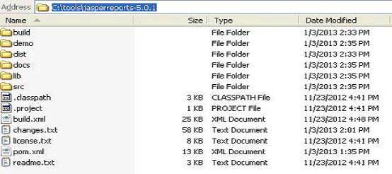

Jasper Report - Environment Setup
JasperReport is a pure Java library and not a standalone application. It cannot run on its own, hence it needs to be embedded into another client or server-side Java application. As it is Java based, it can be run on any platform that supports Java(JDK 1.3 and above). All the JasperReports functionality is gathered in a single JAR file, jasperreports-x.x.x.jar. This JAR alongwith the required and optional libraries (.ZIP file) can be downloaded from the site: JasperReport Library Link. Download the latest version.
The ZIP file includes the JasperReports JAR file alongwith the JasperReports source code, dependent JARs and a lot of examples demonstrating JasperReport's functionality.
JasperReport Environment
To start creating the reports we need to set up the environment ready. Extract the downloaded JasperReport .ZIP file to any location(In our case we have extracted it to C:\tools\jasperreports-5.0.1). The directory structure of the extracted file is as in screen below:
Here is the detail of all the directories:
build: Contains the compiled JasperReport class files.
demo: Contains various examples demonstrating several aspects of JasperReports functionality.
dist: Contains jasperreports-x.x.x.jar file. We shall add this JAR file to our CLASSPATH to take advantage of JasperReports.
docs: Contains a local copy of the JasperReports documentation.
lib: Contains all JARs needed, both to build JasperReports and to use it in our applications.
src: Contains the JasperReports source code.
build.xml: An ANT build file to build the JasperReports source code. If we don't intend to modify JasperReports, we don't need to use this file since JasperReports is distributed in compiled form.
changes.txt: A text document explaining the differences between the current and previous versions of the JasperReports class library.
license.txt: A text document that contains the full text of the LGPL(Lesser General Public License) license.
readme.txt: A text document containing instructions on how to build and execute the supplied examples.
Basically we only use the jasperreports-x.x.x.jar under the dist and JARs under the lib directory for generating reports. As Jasper Reports being an open source tool, if any defect or bug is recognized during execution in the jasperreports-x.x.x.jar, we can fix it and build the JAR again using the build.xml file.
Set the CLASSPATH
To use the JasperReport, we need to set the following files to our CLASSPATH:
jasperreports-x.x.x.jar, where x.x.x is the JasperReports version. This found under directory C:\tools\jasperreports-x.x.x\dist).
All the JAR files under the lib subdirectory (C:\tools\jasperreports-x.x.x\lib).
At the time of installation, we used JasperReport version 5.0.1. Right-click on 'My Computer' and select 'Properties', click on the 'Environment variables' button under the 'Advanced' tab. Now update the 'Path' variable with this C:\tools\jasperreports-5.0.1\dist\jasperreports-5.0.1.jar;C:\tools\jasperreports-5.0.1\lib;. Now you are ready to create your reports.
In all the examples in this tutorial we have used ANT tasks to generate reports. The build file takes care of including all the required JARs for generating reports. Hence, setting CLASSPATH as mentioned above will only help those who wish to generate reports without using ANT.
Build Setup
All the examples in this tutorial:
have been written using simple Text Editor.
have been saved under the directory C:\tools\jasperreports-5.0.1\test\src\com\tutorialspoint.
have been compiled and executed from command prompt, using Apache ANT. We will use a baseBuild.xml file which we shall import in ANT build.xml file in the subsequent chapters. Save this file to C:\tools\jasperreports-5.0.1\test. Following is the content of baseBuild.xml file:
<?xml version="1.0" encoding="UTF-8"?>
<project name="JasperReportExample" basedir=".">
<description>Previews our JasperReport XML Design</description>
<property name="file.name" value="jasper_report_template" />
<!-- Directory where the JasperReports project file was extracted
needs to be changed to match the local environment -->
<property name="jasper.dir" value="../" />
<property name="dist.dir" value="${jasper.dir}/dist" />
<property name="lib.dir" value="${jasper.dir}/lib" />
<property name="src.dir" value="src" />
<property name="classes.dir" value="classes" />
<property name="main-class" value="com.tutorialspoint.HelpMe" />
<path id="classpath">
<pathelement location="./" />
<pathelement location="${classes.dir}" />
<fileset dir="${lib.dir}">
<include name="**/*.jar" />
</fileset>
<fileset dir="${dist.dir}">
<include name="**/*.jar" />
</fileset>
</path>
<target name="compile" depends="clean-sample">
<mkdir dir="${classes.dir}"/>
<javac srcdir="${src.dir}" destdir="${classes.dir}"
classpathref="classpath" />
</target>
<target name="run" depends="compile">
<echo message="Running class : ${main-class}"/>
<java fork="true" classname="${main-class}">
<classpath>
<path refid="classpath" />
</classpath>
</java>
</target>
<target name="clean-sample">
<delete dir="${classes.dir}" />
<delete file="./${file.name}.jasper" />
<delete file="./${file.name}.jrprint" />
</target>
</project>
This file has all the reuired targets, like cleaning the directories, compiling the java files, and executing the class files.
Following is the detail various directories mentioned in baseBuild.xml. Assuming current directory is C:\tools\jasperreports-5.0.1\test):
jasper.dir: is C:\tools\jasperreports-5.0.1 directory
lib.dir: is C:\tools\jasperreports-5.0.1\lib directory
src.dir: is C:\tools\jasperreports-5.0.1\test\src
classes.dir: is C:\tools\jasperreports-5.0.1\test\classes
main-class: com.tutorialspoint.HelpMe. This class is a simple class executed, when no class file name is passed from the command line. Save this file to C:\tools\jasperreports-5.0.1\test\src\com\tutorialspoint.
package com.tutorialspoint;
public class HelpMe {
public static void main(String[] args) {
System.out.println("This is the default class executed."
+ "Please pass the fully qualified class"
+ " name to be executed as command line"
+ " parameter, for example,"
+ " com.tutorialspoint.HelpMe ");
}
}
Jasper Managers classes
There are number of classes which will be used to compile a JRXML report design, to fill a report, to print a report, to export to PDF, HTML and XML files, view the generated reports and report design.
 The list of these classes is:
The list of these classes is:
net.sf.jasperreports.engine.JasperCompileManager: Used to compile a JRXML report template.
net.sf.jasperreports.engine.JasperFillManager: Used to fill a report with data from a datasource
net.sf.jasperreports.engine.JasperPrintManager: Used to print the documents generated by the JasperReports library
net.sf.jasperreports.engine.JasperExportManager:Used to obtain PDF, HTML, or XML content for the documents produced by the report-filling process
net.sf.jasperreports.view.JasperViewer:It represents a simple Java Swing application that can load and display reports.
net.sf.jasperreports.view.JasperDesignViewer:Used at design time to preview the report templates.
Setting up Apache ANT
We aregoing to build all the examples using Apache ANT. So kindly check ANT - Environment Setup chapter to setup Apache ANT on your machine.